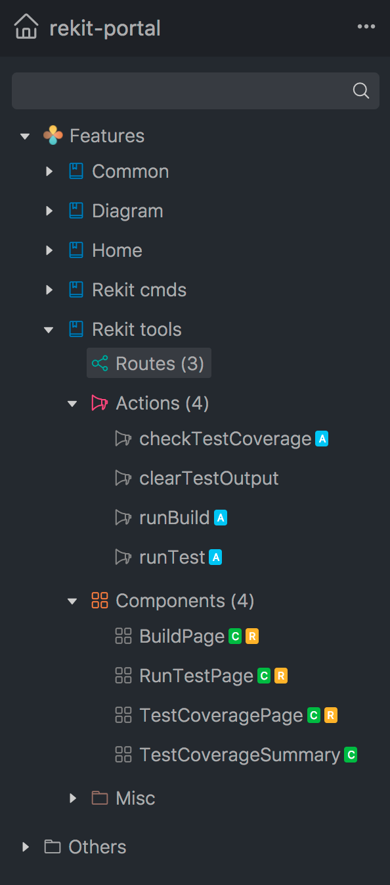
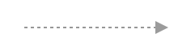
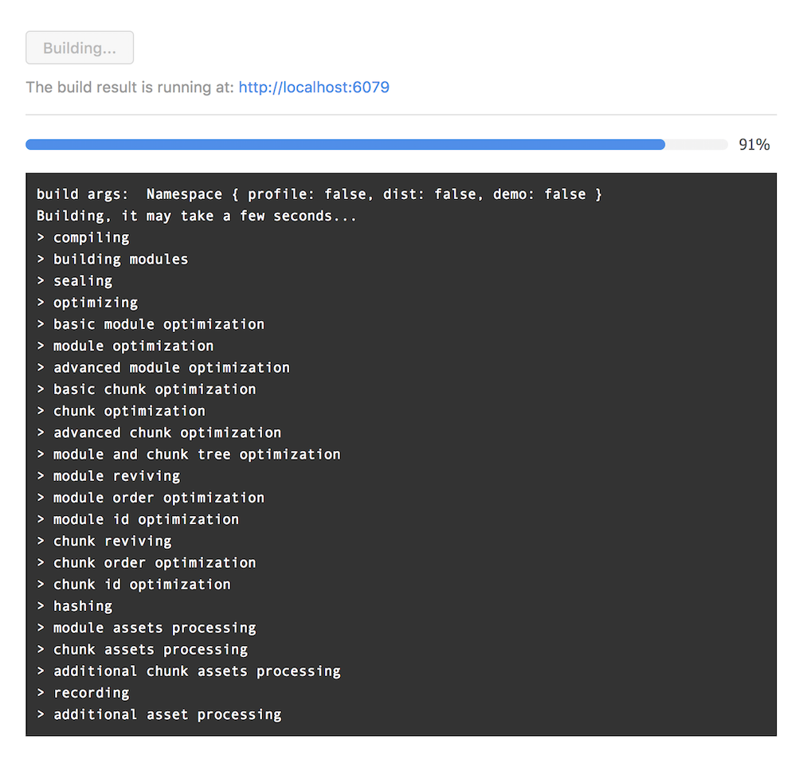
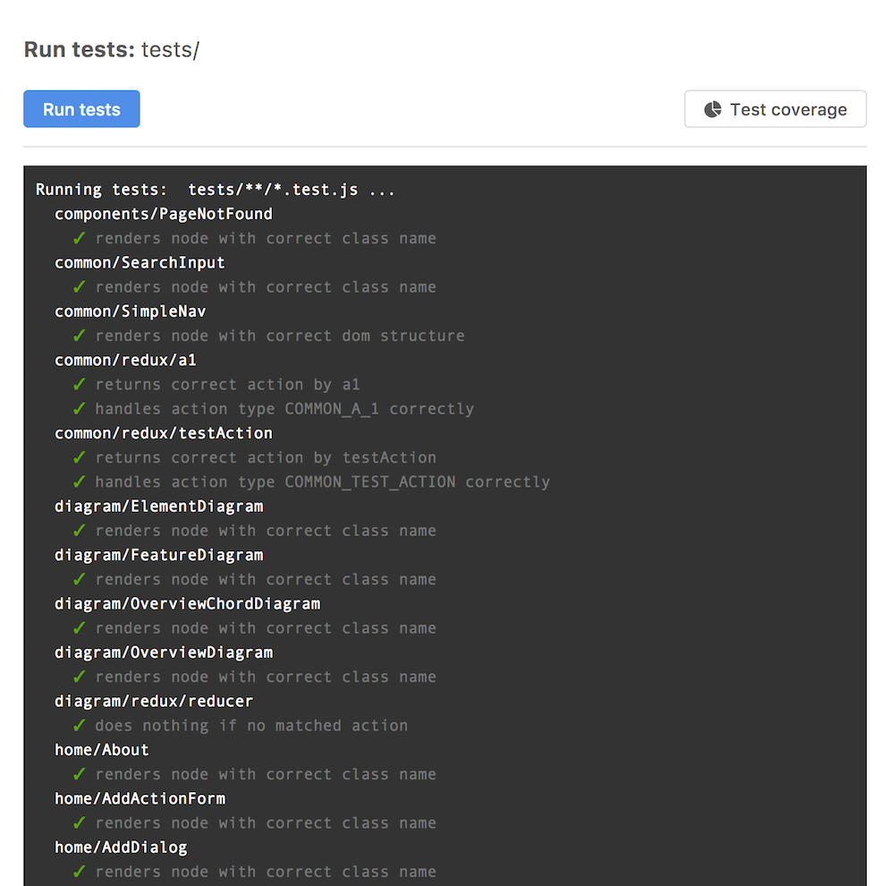
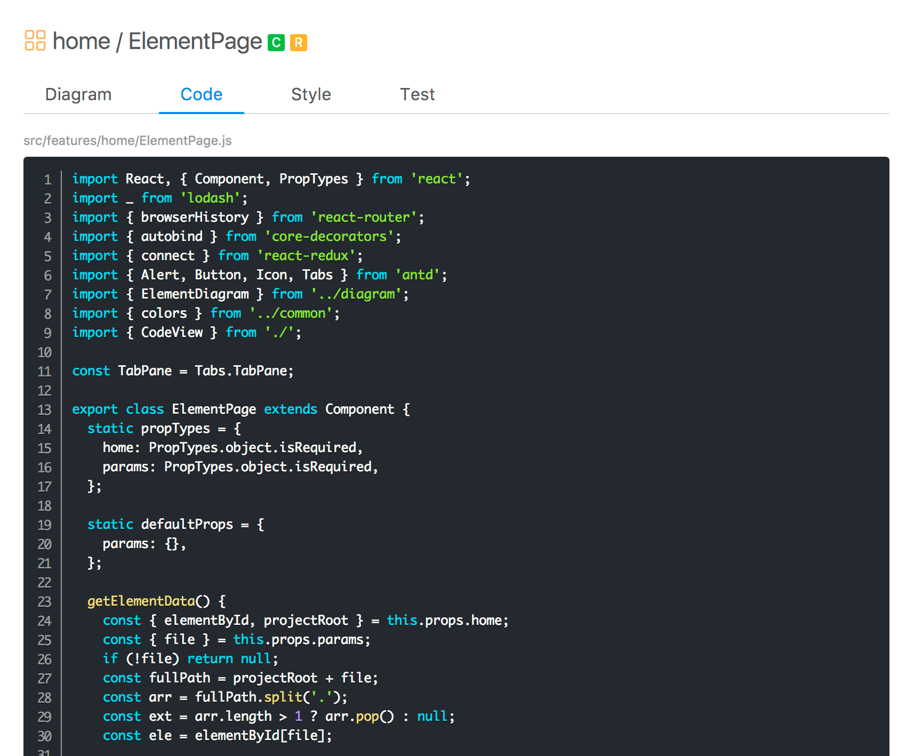

Rekit portal
Rekit portal is a new dev tool shipped with Rekit 2.0. It's a central place to manage and analyze your Rekit project. Rekit portal itself is also created with Rekit, so it's also a good real-world example of Rekit for reference.
To have a quick view on how Rekit portal works, you can look at the live demo.
Key features
- Provide a more intuitive way to create, rename, move or delete features, components or actions than CLI. Just like you always create a Java class using an IDE like eclipse.
- Generate diagram reports of the project architecture by source code. So that new team members, or yourself several months later could learn the project easier.
- Easy to run tests of a single component or action by just right click on it.
- Run build without opening a terminal.
- Integrated test coverage report.
Installation
You don't need to install Rekit portal manually. When a new Rekit app is created, the rekit-portal is auto dependent as a npm module. You should be able to access Rekit portal at http://localhost:6076 by default.
Project explorer
The project explorer provides a more meaningful view of the project folder structure by grouping source files by features, actions, components. You can easily see the functionality structure rather than just folder structure. You can see it at the left side of Rekit portal:

Besides displaying the project structure, it also provides context menus to manage project elements like component.
Dashboard
The dashboard provides an overall status view of the project such as overview diagram, test coverage etc.

Overview diagram
The most notable part of the dashboard is the overview diagram. It's an intuitive view about the architecture of a Rekit project. It's also interactive, you can mouse move to different features, components, actions to see the relationship of some specific element. You can also click a node to deep dive into it. Below information is covered by the overview diagram:
- Relationship between modules.
- The relative size of features.
- How a feature is composed.
When mouseover an element, the diagram will highlight the current element and the relationship which is only about the current element.
Ideally, there should be no circular-dependecies among features. So that they are pluggable and easier to understand. But in real projects you need to balance the architecture and development efficiency. So it's acceptable if there are light-weight circular-dependencies between features while a principle is to avoid too many such dependencies. You can delay the refactor of removing dependencies when some type of dependencies become too complicated.
Here is a list about what different colors and lines mean:
 |
Features. |
 |
Actions. |
| Components. | |
| Misc files. | |
 |
A module depends on others. |
| A module is dependent by others. | |
|  | A module depends on others in the same feature. |
Element diagram
While the overview diagram shows the overall architecture of the project, the element diagram provides a focused view of the relationship between the selected element and others. It helps to understand a module quickly, and helps to find out over-complicated modules.
When you click an element from the project explorer or the overview diagram, it will show the element diagram by default:

Test coverage
Rekit uses istanbul to generate test coverage report. After running all tests against the project, the test coverage will be available. Running a single test or tests of a folder does not generate coverage report. Note that if some tests failed, the report data may be incomplete.
You can see the overall test coverage report from dashboard or the original report generated by istanbul-nyc from the test coverage detail page.
Manage project elements
Rekit portal wraps command line tools into UI dialogs, with which you can intuitively create, rename or delete components, actions etc. To open a dialog, right click an element in the project exploer and click the corresponding menu item.

Run build
Rekit portal executes the build script tools/build.js under your project when click the menu item Build. It reads the webpack build progress data to update the progress bar. Though build.js created by Rekit looks a bit complex but you can update it per your requirement after you fully understand how it works.

Run tests
Rekit portal executes the test script tools/run_test.js under your project when click the menu item Run tests. The script accepts the argument which tests to run, it could be one single file or a folder. When no argument provides, it runs all tests under tests folder, and generates test coverage report. See more in command line tools page.
So when click Run test menu item on a project element like component, it just executes tools/run_test.js behind and pass the current component test file as the argument to the script. You can also update run_test.js script on your requirement.

Code viewer
It helps to quickly view the source code of the project. For example, when select an component, by default it shows the diagram view, but you can switch to the code view where you can view the source code of the component. And you could also easily view the style code or test file. For now Rekit hasn't support editing code directly because it doesn't intend to replace your favorite text editors.
